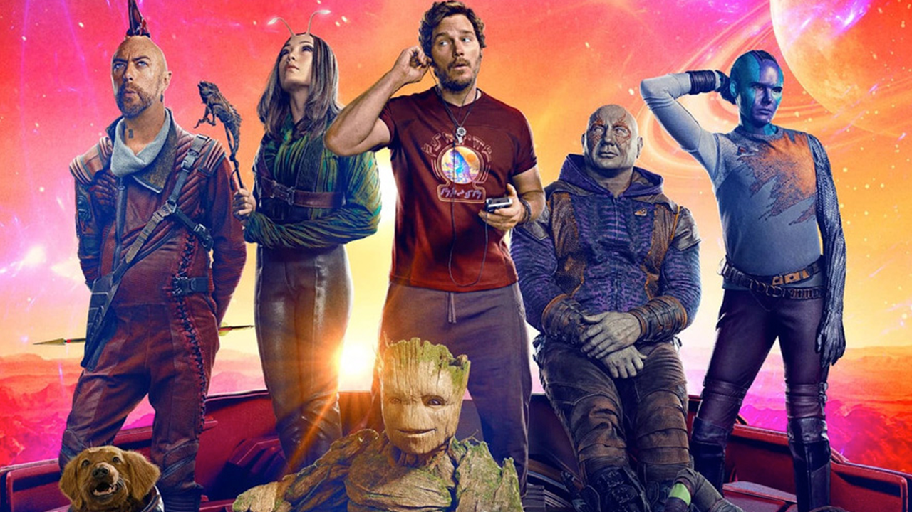
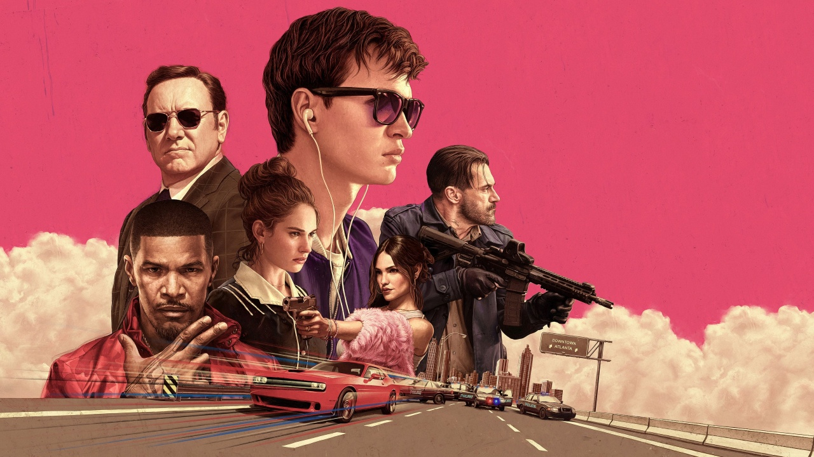

GUARDIANS OF THE GALAXY
El director James Gunn entusiasmó a los fanáticos con Guardianes de la Galaxia Vol. 3 el (3 de abril) cuando dio a conocer la banda sonora oficial de la película, que presenta una variedad de canciones clásicas de los grandes de todos los tiempos. La mezcla impresionante incluye una versión acústica de "Creep" de Radiohead, "No Sleep Til Brooklyn" de Beastie Boys, "Badlands" de Bruce Springsteen, '''Always Chasing Rainbow" de Alice Cooper, The Mowgli's* "San Francist y "Dog Days Are Over" de Florence + the Machine, entre otros éxitos.